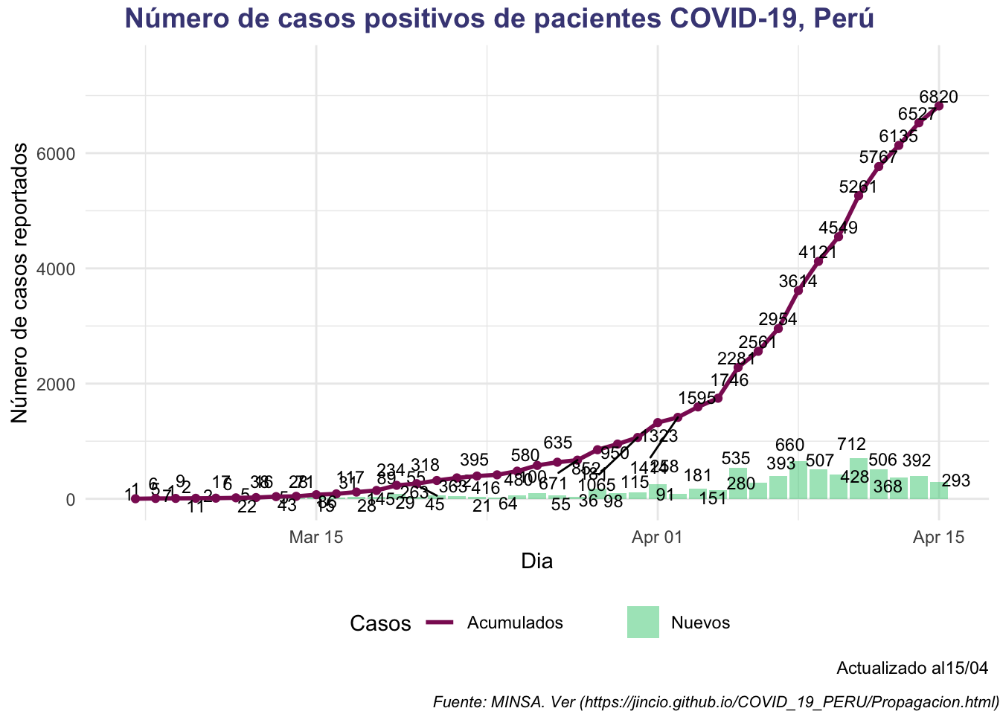
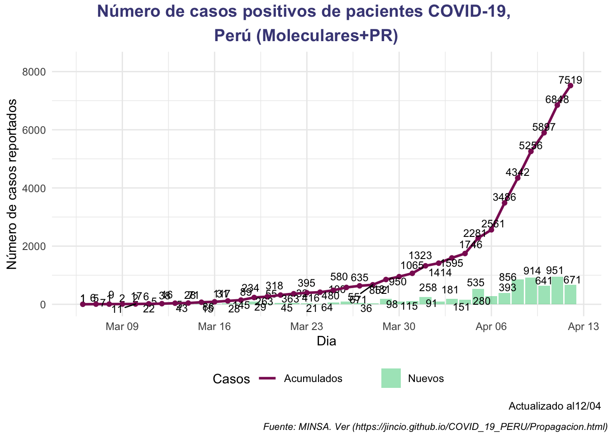
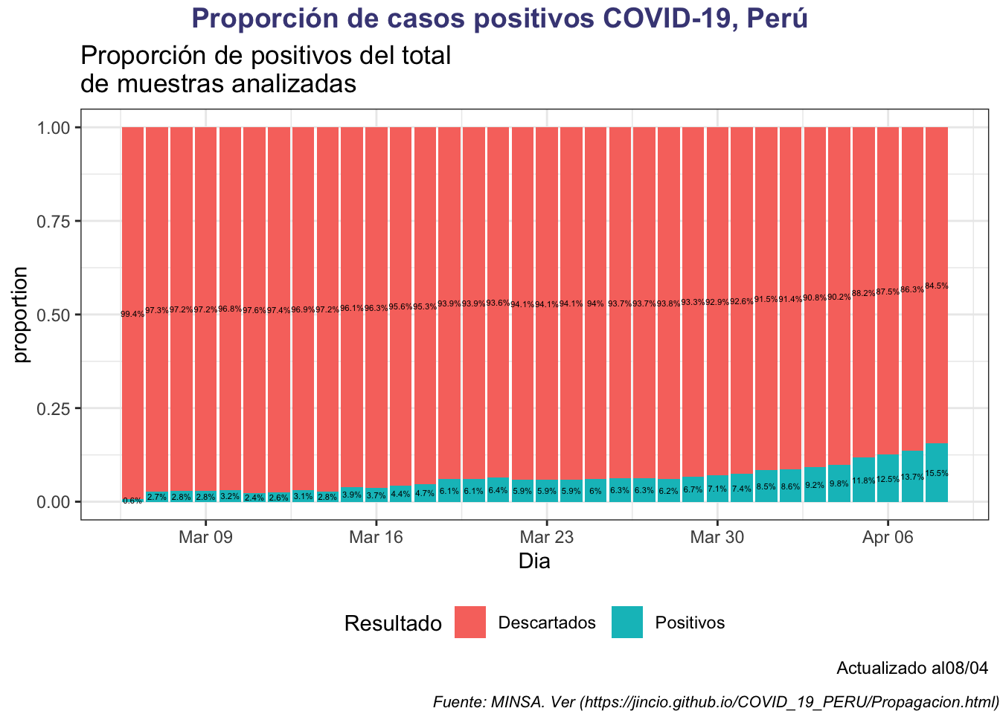
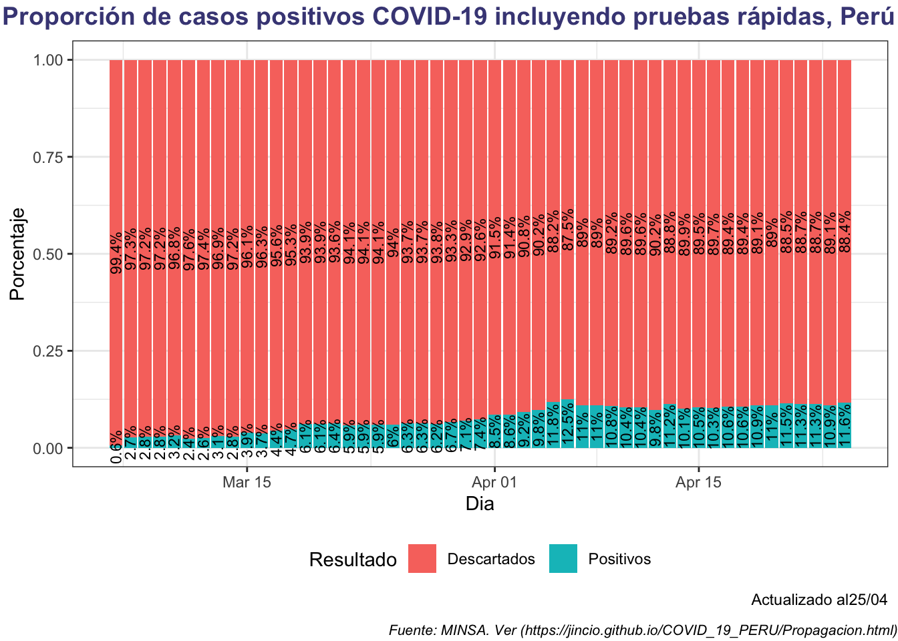
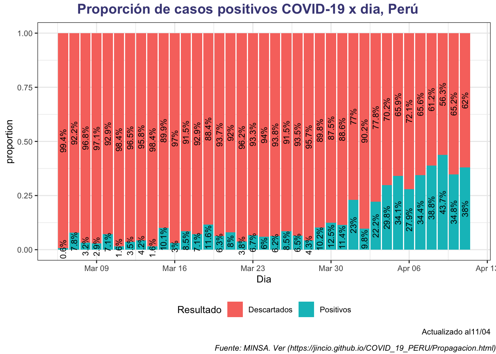
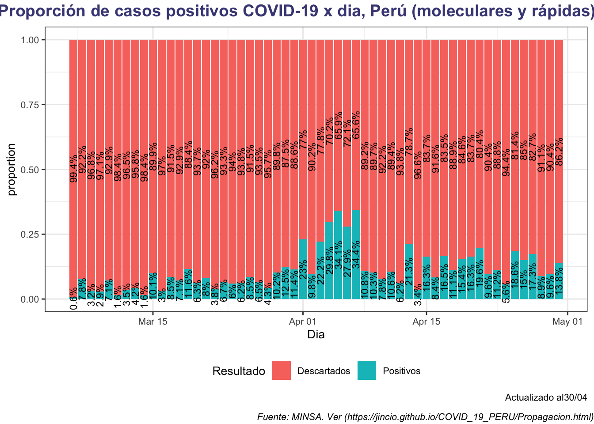
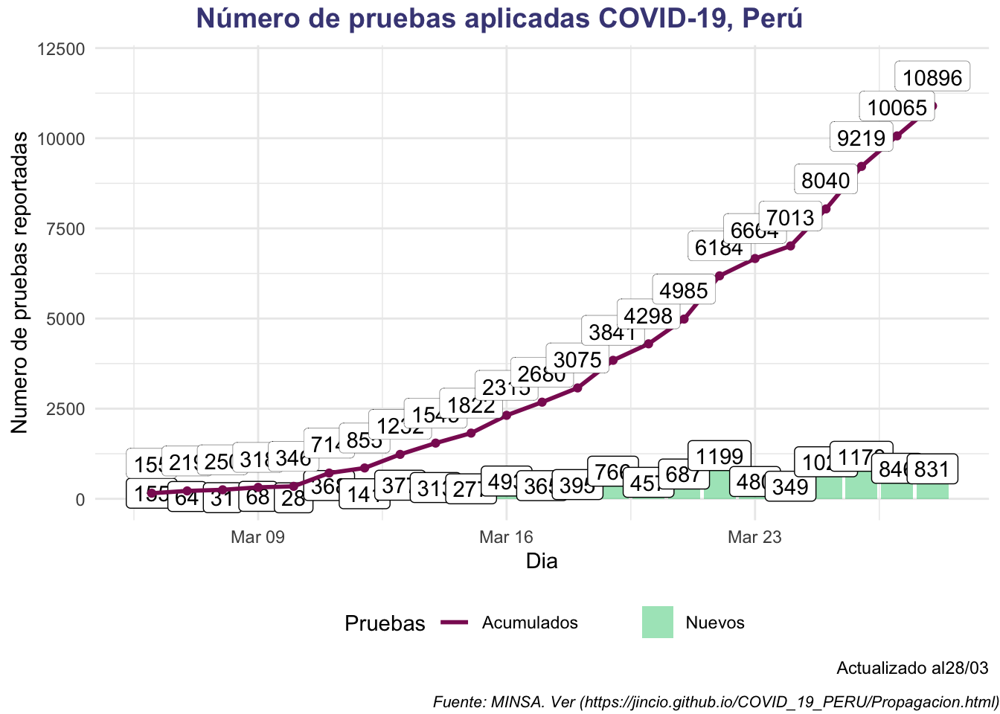
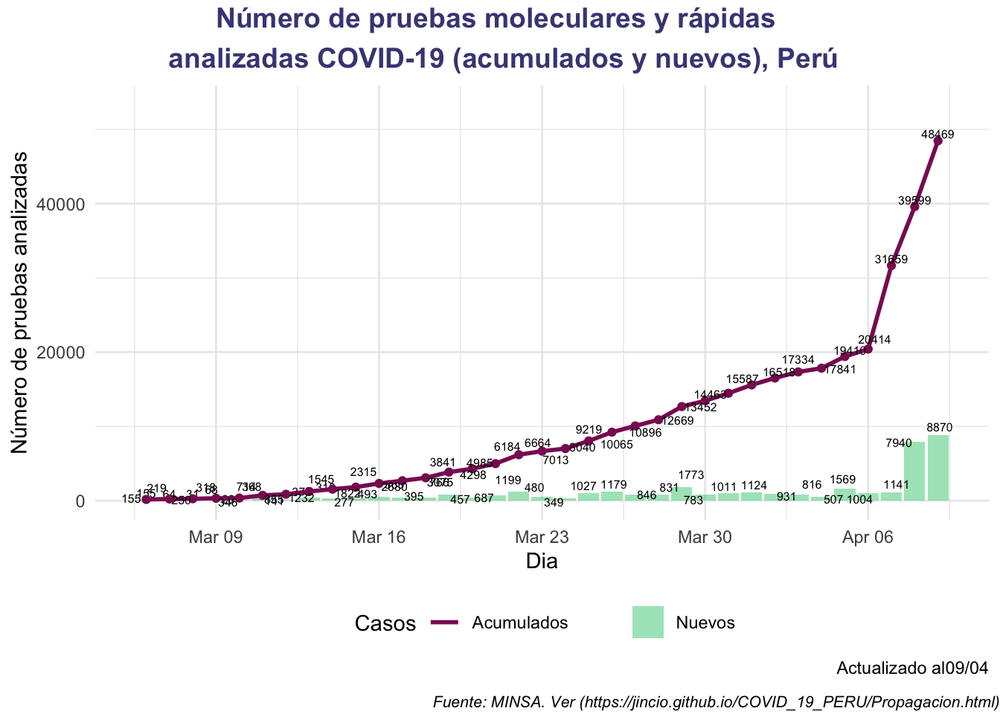
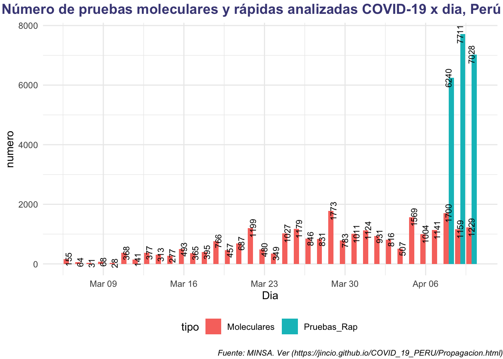

En esta página complementamos los gráficos presentados en la sala situacional del coronavirus página oficial del MINSA









Para los gráficos he adaptado del post de Gabriel Carrasco Escobar (http://gcarrasco.rbind.io/blog/covid19_viz/)
Para la construcción de la tabla he usado la información difundida por MINSA en su cuenta oficial de twitter [@Minsa_Peru](https://twitter.com/Minsa_Peru). Existe también la página https://www.gob.pe/8662.
03/29
03/28
📄Reporte │ Esta es la situación del coronavirus #COVID19 en Perú hasta las 00:00 horas del 28 de marzo. #PerúEstáEnNuestrasManos
— Ministerio de Salud (@Minsa_Peru) March 28, 2020
Para más información, visita: https://t.co/F4GaDrvulE pic.twitter.com/kxI5j275r3
03/25
🗓 Reporte │ Esta es la situación del coronavirus #COVID19 en Perú hasta las 00:00 horas del 25 de marzo. #PerúEstáEnNuestrasManos
— Ministerio de Salud (@Minsa_Peru) March 25, 2020
Para más información, visita: https://t.co/F4GaDrvulE pic.twitter.com/9wE4kaIYZ5
03/24
Dos fallecidos
🔴COMUNICADO | El #Minsa lamenta informar el sensible fallecimiento de dos personas por #COVID19 en territorio peruano. Se trata de un varón de 38 años y una mujer de 66 años. Extendemos nuestras condolencias a sus familias. pic.twitter.com/xrsq52SpwW
— Ministerio de Salud (@Minsa_Peru) March 24, 2020
03/23
🗓 Reporte │ Esta es la situación del coronavirus #COVID19 en Perú hasta las 1:00 horas del 23 de marzo. Se registran 36 ciudadanos hospitalizados. Esta actualización corrige información publicada. #PerúEstáEnNuestrasManos
— Ministerio de Salud (@Minsa_Peru) March 23, 2020
Para más información, visita: https://t.co/F4GaDrvulE pic.twitter.com/zYNDZNOSrL
03/22
🗓 Reporte │ Esta es la situación del coronavirus #COVID19 en Perú hasta las 2:30 horas del 22 de marzo. Se registran 31 ciudadanos hospitalizados. #PerúEstáEnNuestrasManos
— Ministerio de Salud (@Minsa_Peru) March 22, 2020
Para más información, visita: https://t.co/F4GaDrvulE pic.twitter.com/GWRxaHvY2B
03/21
Casos:
🔴COMUNICADO | El #Minsa lamenta informar que hoy, sábado 21 de marzo, a las 07:20 horas, se registró el sensible fallecimiento de una persona con #COVID19 en Piura. El ministerio extiende sus condolencias a la familia. pic.twitter.com/ZwMefFiTsq
— Ministerio de Salud (@Minsa_Peru) March 21, 2020
03/20
🗓 Reporte │ Esta es la situación del coronavirus #COVID19 en Perú hasta las 12:00 horas del 20 de marzo. #PerúEstáEnNuestrasManos
— Ministerio de Salud (@Minsa_Peru) March 20, 2020
Para más información, visita: https://t.co/F4GaDrvulE pic.twitter.com/Kg7Gr2QRRL
🔴COMUNICADO | El #Minsa informa que, a las 9:17 horas de hoy, viernes 20 de marzo, se registró la muerte de una persona con #COVID19 en territorio peruano. Expresamos nuestras más sentidas condolencias a sus familiares. pic.twitter.com/B8MEz7alXR
— Ministerio de Salud (@Minsa_Peru) March 20, 2020
03/19
Casos:🗓 Reporte │ Esta es la situación del coronavirus #COVID19 en Perú hasta las 12:00 horas del 19 de marzo. Se registran dos altas. #PerúEstáEnNuestrasManos
— Ministerio de Salud (@Minsa_Peru) March 19, 2020
Para más información, visita: https://t.co/F4GaDrN5dc pic.twitter.com/zYppUus7Ip
Fallecidos:
Segundo y tercero🔴 URGENTE | El #Minsa lamenta informar la sensible muerte de dos ciudadanos por coronavirus #COVID19 en territorio peruano. Extendemos nuestras condolencias a sus familias. pic.twitter.com/UF5X1ukqtR
— Ministerio de Salud (@Minsa_Peru) March 20, 2020
Primero
🔴COMUNICADO | El #Minsa lamenta informar que, a las 15:00 horas de hoy, jueves 19 de marzo, se registró el primer fallecimiento por #COVID19. pic.twitter.com/sgC0nhk87b
— Ministerio de Salud (@Minsa_Peru) March 19, 2020
03/18
🗓 Reporte │ Esta es la situación del coronavirus #COVID19 en Perú hasta las 7:00 horas del 18 de marzo. #PerúEstáEnNuestrasManos
— Ministerio de Salud (@Minsa_Peru) March 18, 2020
Para más información, visita: https://t.co/F4GaDrvulE pic.twitter.com/pPPwxu13dG
03/17
🗓 Reporte │ Esta es la situación del coronavirus #COVID19 en Perú hasta las 8:20 horas del 17 de marzo. #PerúEstáEnNuestrasManos
— Ministerio de Salud (@Minsa_Peru) March 17, 2020
Para más información, visita: https://t.co/F4GaDrvulE pic.twitter.com/8yojgp7eYw
03/16
🗓 Reporte │ Esta es la situación del coronavirus #COVID19 en Perú hasta las 8:46 horas del 16 de marzo. #PerúEstáEnNuestrasManos
— Ministerio de Salud (@Minsa_Peru) March 16, 2020
Para más información, visita: https://t.co/F4GaDrvulE pic.twitter.com/fsY4PTgtFL
03/15
🗓 Reporte │ Esta es la situación del coronavirus en Perú hasta las 13:10 horas del 15 de marzo.
— Ministerio de Salud (@Minsa_Peru) March 15, 2020
Para más información, visita: https://t.co/F4GaDrvulE pic.twitter.com/HUR87UVlxQ
03/14
🗓 Reporte │ Esta es la situación del coronavirus en Perú hasta las 19:20 horas del 14 de marzo.
— Ministerio de Salud (@Minsa_Peru) March 15, 2020
Para más información, visita: https://t.co/F4GaDrvulE pic.twitter.com/102MJF7uPE
03/13
🗓 Reporte │ Esta es la situación del coronavirus en Perú hasta las 16:00 horas del 13 de marzo.
— Ministerio de Salud (@Minsa_Peru) March 13, 2020
Para más información, visita: https://t.co/ATXAITDSWN pic.twitter.com/ERDFeBV7Tq
03/12
🗓 Reporte │ Esta es la situación del coronavirus en Perú hasta las 9:55 horas del 12 de marzo.
— Ministerio de Salud (@Minsa_Peru) March 12, 2020
Para más información, visita: https://t.co/ATXAITDSWN pic.twitter.com/Yr2gGdPc1f
03/11
🗓 Reporte │ Esta es la situación del coronavirus en Perú hasta las 20:00 horas del 11 de marzo.
— Ministerio de Salud (@Minsa_Peru) March 12, 2020
Para más información, visita: https://t.co/ATXAITDSWN pic.twitter.com/RgArH78FMz
03/10
🗓 Reporte │ Esta es la situación del coronavirus en Perú hasta las 8:00 horas del 10 de marzo.
— Ministerio de Salud (@Minsa_Peru) March 10, 2020
Para más información, visita: https://t.co/Mv594Y83Y2 pic.twitter.com/y5o2DZffuL
03/09
🗓 Reporte │ Esta es la situación del coronavirus en Perú hasta las 8:30 horas del 9 de marzo.
— Ministerio de Salud (@Minsa_Peru) March 9, 2020
Para más información, visita: https://t.co/ATXAITDSWN pic.twitter.com/VUWdMFaJkJ
03/08
Este tweet fue RT por el Minsa, por eso asumo que es la información oficial. MINSA no publicó ningún reporte como en los dias anteriores o posteriores.
Colaboran para la elaboración de los gráficos: